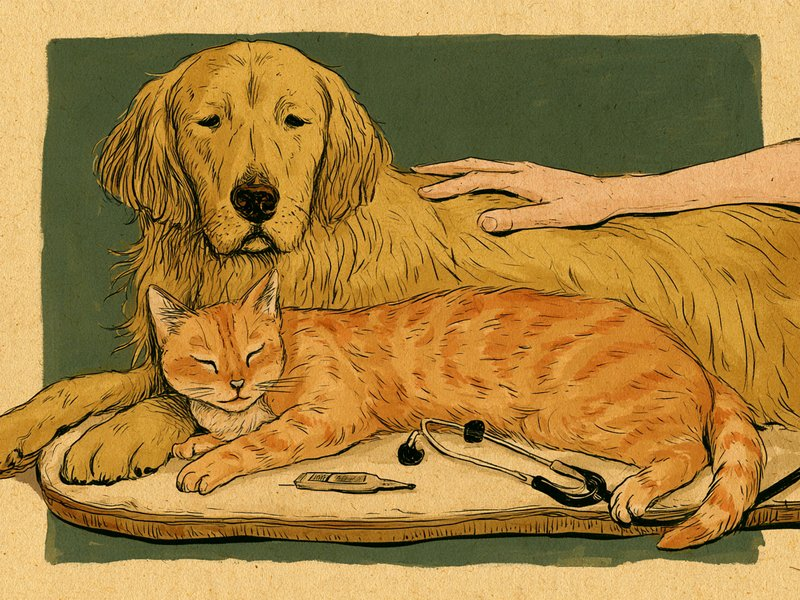

犬や猫は、言葉で「具合が悪い」と伝えることができません。だからこそ「食べているか・飲んでいるか」「排泄はいつも通りか」「様子に違和感はないか」という毎日の小さな観察が、病気に早めに気づくいちばんの手がかりになります。 Dogs and cats cannot tell us in words when they feel unwell. Watching three simple things every day - eating and drinking, toilet habits, and general behavior - is the best way to catch illness early.
食欲・飲水量の変化:「食べない」「飲む量が変わった」に注目
犬や猫の体調をみるうえで、まず気にしたいのが食欲と飲水量です。飲水量の目安は、犬で体重1kgあたり1日およそ50mL、猫でおよそ60mLとされています。まずはこの数字を、うちの子の飲み方を見る物差しにしてみてください。
飲む量が増えた場合は腎臓病(多飲多尿)・糖尿病・クッシング症候群、減った場合は消化器疾患・口の中の痛み・脱水が疑われるとされています。「最近やたら水を飲む」「水皿がほとんど減らない」といった変化は、飼い主が気づきやすい手がかりのひとつです。
食欲については、猫の場合の目安として、24時間以上食べなければ注意、48時間以上では肝リピドーシス(脂肪肝)という命に関わる病気のリスクが高まりかなり危険、3日間まったく食べなければ緊急事態とされています。子猫(生後2〜3ヶ月)は半日(12時間程度)食べないだけで低血糖のリスクがあり、高齢猫は丸1日(24時間)食べなければ受診を検討するよう勧められています。食事も水も取らない状態が12〜24時間続く場合は、年齢に関わらずすぐ受診とされています。この時間の目安は情報源によって幅があり、生後2ヶ月未満のごく幼い子猫はさらに短時間で危険になるとする情報もあるため、あくまで一つの目安として捉えてください。犬でも食欲不振は共通の警戒サインですから、「そのうち食べるだろう」と長く様子を見ないことが大切です。
出典を見る
出典: 千里桃山台動物病院「犬・猫の飲水量について」 hs-gac.jp / オダガワ動物病院「猫が食べないとき」 o-vet.co.jp
排泄物の変化:便の色と下痢の続き方を見る
便は毎日見られる、お腹の状態を映す分かりやすいバロメーターです。動物病院のサイトで危険なサインとして挙げられているのは、イチゴジャム状・ラズベリージャム状の鮮血便と、黒っぽいタール状の便です。黒い便は消化管の上のほうからの出血を示唆するとされ、色の変化そのものが受診の目安になります。
下痢については、3日以上続く、あるいはいったん治っても再発する場合は速やかに受診することが勧められています。さらに、血便・黒色便・嘔吐・食欲や元気の低下のいずれか1つでも重なっていれば、早急に受診したいサインとされています。
トイレ掃除のついでに便の色・形・回数をざっと見る癖をつけておくと、こうした変化に気づきやすくなります。
出典を見る
出典: 東中野アック動物医療センター akkh-vmc.com / 第一アイペット「犬の下痢」 ipet-ins.com
猫の排尿困難(特にオス猫):一刻を争うサイン
ここからは猫、とくにオス猫に固有の話です。オス猫の尿道は細く長いため詰まりやすいとされています。完全に閉塞してしまうと半日も経たないうちに危険な状態に陥ることもあると説明されており、動物病院のサイトでは「時間との勝負」と表現されています。危険になるまでの時間は情報源によって幅がありますが、一刻を争う状態だという点では共通しています。これは前の章で触れた食欲不振の時間の目安とは別物です——「◯時間なら様子見してよい」という基準ではなく、気づいた時点ですぐに動物病院へ連絡することが勧められています。
典型的なサインは、何度もトイレに行くのに尿がほとんど出ていない、トイレで長くしゃがんでも排尿できない、お腹が固く張っている、というものです。一見「便秘かな」「トイレが気に入らないのかな」と見えることもありますが、オス猫でこの様子が見られたら、迷ったら早めに動物病院へ連絡することが命を救う判断になるとされています。
犬猫を問わず排尿の異常は動物病院に相談したい変化ですが、「短時間で命に関わりうる」という緊急度の高さは、オス猫に際立った特徴と考えられます。オス猫と暮らしている方は、この項目だけでも覚えておくと安心です。
出典を見る
出典: 日本動物医療センター「猫の尿道閉塞」 jamc.co.jp / 湘南ルアナ動物病院 ruana-ah.com
様子・行動の変化:隠れる・呼吸が荒い
数えられない変化として見落としやすいのが、様子や行動の変化です。猫は野生時代の名残で弱った姿を他者に見せない習性が強く、痛み・発熱・内臓の不調があると、家具の裏や押し入れの奥など普段は使わない場所に隠れることがあるとされています。「呼んでも出てこない」「見慣れない場所にいる」は、それだけで体調を疑う材料になります。
もうひとつ注目したいのが呼吸です。お腹を大きく動かして息をする努力性呼吸(頻呼吸)は、呼吸器の病気や胸水・腹水のサインになりうるとされています。寝ているときの呼吸の速さや、お腹の動き方が普段と違わないかを、落ち着いた時間帯に眺めてみてください。
犬でも、散歩に行きたがらない、好きな遊びに反応しない、といった「いつもと違う」は大切なサインです。普段の過ごし方——好きな場所、活発になる時間帯、飼い主への反応——を知っておくことが、こうした変化に気づく土台になります。
出典を見る
出典: 富士見台どうぶつ病院「猫が隠れて出てこないとき」 fujimidai-ac.com / 湘南ルアナ動物病院 ruana-ah.com
様子見をせず動物病院に相談したいサイン
最後に、動物病院のサイトで「すぐに相談を」とされているサインを整理しておきます。口を開けて呼吸している(開口呼吸)は、猫では強い異常のサインとされています。手足が震える・意識がない・5分以上発作(痙攣)が止まらない、歯茎や口の中の粘膜が白っぽい・灰白色といった様子も、緊急性の高いサインとして挙げられています。
排尿しようとしても尿が出ない(特にオス猫)は、前の章で触れたとおりです。加えて、吐きたそうにしているのに吐けないという様子は胃拡張・胃捻転の疑いがあるとされ、早急な受診が勧められています。
これらに気づいたときは、自己判断で様子を見るのではなく、まず動物病院に電話で状況を伝えることが勧められています。いつから・どんな様子か・食事や排泄はどうだったかをメモしておくと診察の助けになります。夜間や休日に対応してくれる病院を、元気なうちに調べておくと安心です。
出典を見る
出典: dr-nyan.com「救急受診の目安」 dr-nyan.com / 湘南ルアナ動物病院 ruana-ah.com / 日本動物医療センター jamc.co.jp
- 口を開けて呼吸している(開口呼吸、猫では強い異常のサインとされる)
- 手足が震える・意識がない・5分以上発作(痙攣)が止まらない
- 歯茎や口の中の粘膜が白っぽい・灰白色
- 排尿しようとしても尿が出ない(特にオス猫、時間との勝負とされる)
- 吐きたそうにしているのに吐けない(胃拡張・胃捻転の疑い)
これらに気づいたら様子見をせず、すぐに動物病院へ電話で連絡してください。
犬猫の健康観察は、「食べた・飲んだ」「出した」「いつも通り動いた」の三つに絞るとぐっと続けやすくなります。飲水量は犬で体重1kgあたり約50mL/日、猫で約60mL/日が目安とされているので、うちの子の体重から一度計算しておくと「多い・少ない」の判断材料になります。季節ごとの注意点は犬猫の冬の寒さ対策ガイド、年齢を重ねてからの観察ポイントはシニア期の暮らしガイドもあわせてどうぞ。
ミニクイズ:オス猫が何度もトイレに行くのに尿が出ていない。「便秘かも」と一晩様子を見てもよい?(タップして答えを見る)
こたえ×。オス猫は尿道が細く長いため詰まりやすく、完全に閉塞すると短時間で危険な状態に陥ることもあるとされています。動物病院のサイトでは「時間との勝負」と表現されており、様子を見ずにすぐ動物病院へ電話することが命を救う判断になると勧められています。